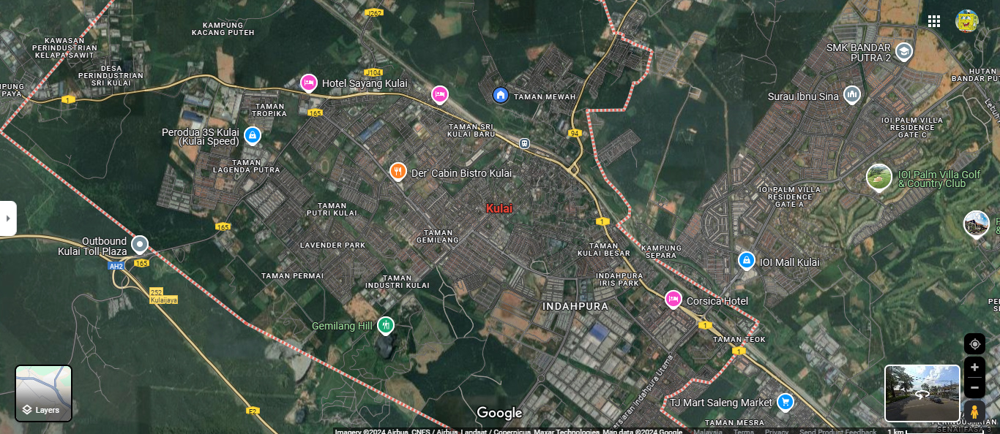

"Hello everyone! The first name my beloved parents gave me is Nurul Ain binti Md Jamal. You can call me Ain. I am a good person to all knowledge. I am 20 years old this year and in a few months I will turn 21 in January.HEHEHE,I'm an adult. I hope everyone who read this is as good as I am. I thought you guys knew, I love cats, but I also love other animals. There's one thing I also love which is eating, and I'd rather buy food than clothes. So if anyone wants to give me a shirt of course I'm happiest. HEHE. Okay guys if you are still interested to read, you may scroll down."
"Ops, before I forget, I want to tell you that I come from Kulai, Johor. Below is a map of the Kulai area."

-
HOBBIES AND INTEREST
"Okay guys, next I will focus on my hobbies and interests. For your information I like to play sports , but only when I'm active. When I was little, I loved reading books and novels. I also like riding motorcycles. As I grew older, I realized my hobby was not like that. I like talking with the closest people so I don't feel lonely. HAHAHA. I can be alone, but I will be lonely too. Okay, let's talk about interests, to be honest, I'm a very bored person, but I like to listen to lively music while studying, that's possible if I feel like I'm studying without songs, I feel empty. Apart from that I am more interested in baking cakes and the like. If you ask my friends they will know my behavior. If they don't know maybe I'm the one who didn't show the coat."

-
FAVOURITE FOOD AND DRINK
"Then guys, I like to tell everyone that I can eat most of the things but I am less into starchy foods and the like because I have gastric disease and GERD. so below are some of the foods I like hehe"
My Top 8 Favourite Food:
- RICE:
- My mother's cooking, Fried rice, Chicken rice, Ambeng rice
- CHICKEN:
- Red cooked chicken, Soy sauce cooked chicken, Korean fried chicken, Roasted chicken
- CHOCOLATE:
- Beryl's
- ICE CREAM:
- Mixue, Llao Llao, Vico, Farm Fresh
- SEAFOOD:
- Flour Fried Octopus, Butter Shrimp, Crab Cooked Fat Chili Api, Tom Yum Seafood
- NOODLES AND PASTA:
- Maggi, Ramen, Meehun soup
- FRUITS:
- Watermelon, Mango, Grape
- DESSERTS:
- Batik cake, Big Apple Donut
My Top Favourite Drink:
- DRINKS:
- Coolblog, Tealive, Ice

-
DREAM TRAVEL PLACE
"Talk about a dream place, I used to dream about it. I want to go to the Maldives with my beloved, loved ones are not specific to couples only, but anyone like my family, friends, and people I love. But I'm also interested in adventure, I like nature but I still haven't had the chance to get to know nature in depth, hopefully, one day I can go with my partner to do camping, hiking, and jungle trekking. HAHAHA, I hope I can do that, But I want to emphasize that wherever we feel comfortable and dream of going, remember there is a lovely place to lean on. Don't forget the destination I most want to go first is Mecca , I pray one day I can go there to perform Hajj. Aamiin! below are some of places I would like to visit along with why and what I will do there:"
| WHERE? | WHY? | WHAT? |
|---|---|---|
| maldives island | To be honest, I like to see islands and beaches, but unfortunately I can't swim as well as pandelala renong, I can only swim on the sandy beach. HAHAHA I'm just kidding | People say the Maldives is famous for its soft white sand beaches and clear seawater. I would like to spread out a mat and relax under a beach umbrella, swim, or just enjoy the view of the sunset. but if it's evening I will go in. HAHAHAHA. not only that, I won't miss the chance to go snorkeling, island hopping with loved ones. okay, if you want to know more, I also want to enjoy the sunset cruise, it's easy to say that I want to have fun and release the burden. but when we are having fun, we must not forget ourselves, we must remember people who are more difficult than us |
| mount of kinabalu | Why did I choose the dream place where I want to go Mount Kinabalu? The reason is that there is Amazing Natural Beauty. this is because Mount Kinabalu has a very high biodiversity. I will pass through various types of forests, ranging from tropical rainforests to alpine forests. Wow, it's fun.okay, the other reason is that I actually like climbing mountains like I said, but I haven't had the chance yet. Why Mount Kinabalu? Why not Mount Jerai? because climbing Mount Kinabalu is a proud achievement. so I want to be one of those proud people. HEHEHE | Okay, if we go to the mountain, we won't swim, right? must be the first thing I will do is climb which is the main activity, after we are tired of climbing, we just want a result right, i would enjoy the view from the top hehehe, must be beautiful right? and again this mountain Kinabalu is home to various types of endemic plants and animals that cannot be found anywhere else, we must have this experience, right? |
| taj mahal, agra india. | The reason I chose the Taj Mahal is because it is a symbol of eternal love. Why do I say that because the Taj Mahal is a monument of love built by a king in memory of his wife? again, I like The Shape of the building which has a perfect blend of Persian, Islamic, and Indian architecture. | Okay I like to take pictures to reminisce the permanent memories I have where social media, so therefore I intend to take pictures at the Taj Mahal register and give them as memories. it's like people always do OOTD picture gatherings, right, but I'm not good at posing, I'm better at taking pictures of the scenery, right? |

-
PETS
"This is the most liked topic. I love cats very much. But for now, I have decided not to take care of my favourite animal shortly. HMM . Want to know why? recently in the last 2 months, I have adopted a kitten that I met at my intern's place. This is my first time collecting cats myself. I'm so excited to take care of this cat. Sadly, I didn't get to see him until a month before he died of a heart attack. His name is Shimari, I love him. I told her that I loved him very much.
Okay next, I have a cat that I used to take care of I was a little. The first one I took care of was Ibu Ibu came to play in front of my house, she was a female, and at first I didn't intend to take good care of Ibu just to give the food as usual and play with her. From that moment on, I became comfortable and decided to take care of Ibu. Ibu has been pregnant for 7 generations. I love you Ibu, you look tired but you are a good mom.
I had to take care of all the children of Ibu which I was most impressed departure is Shitam because, in front of my eyes, he had to hit a car. I couldn't save him. HM . Next is Shimau and Leo they are both are siblings. Shimau is in the sixth generation and Leo is in the last generation of Ibu children. They two are tabby cats. They both left without me knowing if they were still playing out there or if they were already on top. HMM.
If you ask me, I'd be the happiest, but if you ask me now I'd be the opposite. I want to say thank you for being with me in my life. And sorry for everything that happened. I love all the Cats in the world. The rest for other animals I have not thought to defend"

-
AMBITION OR LIFE DREAM
"Okay now talking about ambition, if from childhood I would talk like a child in general that I would be a teacher. HaHa it's so cliche. When I was in high school, I wanted to be a soldier, I wanted to hold an AK47, but my destiny was different. I knew I didn't qualify to be a soldier. I am moving. I think it would be great if I could just be a successful person without leaving any obligations. That's my goal. The rest I'm just going through right now. Wish good in my life"
"Apart from my ambitions, I also dream of opening a foundation to help underprivileged children. I want them to get a decent education, because I believe that education is the key to a successful life. In addition, I want to be rich so that I can share food with orphans and elderly people who do not have guardians. If I could, I would open old people's welfare homes to take care of and experience these elderly people. It must be cute."